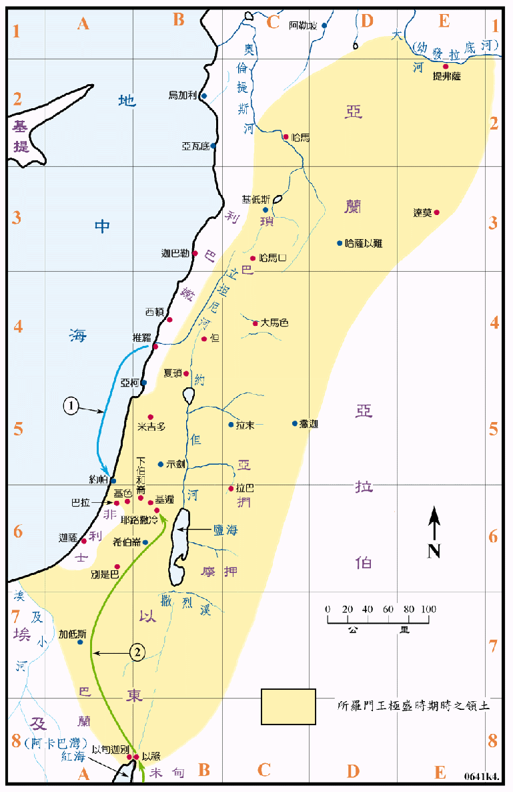

970～930BC

行动线说明
| 序号 | 圣经 | 说明 |
|---|---|---|
| 王上4:21-28 | 所罗门的疆域和属国。 | |
| 1 | 王上5章 | 推罗王希兰全力协助所罗门王建圣殿，从腓尼基供应材料和工匠。 |
| 王上9:15-18 | 所罗门建夏琐、米吉多、基色、巴拉、下伯和仑和旷野里的达莫等城。 | |
| 王上9:26-28 | 所罗门在以旬迦别建造船只，从俄斐运回大量的金子。 | |
| 2 | 王上10:1-13 | 示巴女王觐见。 |
| 王上11:1-8 | 所罗门宠爱许多外邦女子，并随他们去拜外邦的神。 | |
| 王上11:14-22 | 以东人哈达兴起，作所罗门的敌人。 | |
| 王上11:23-25 | 亚兰人利逊兴起，作所罗门的敌人。 | |
| 王上11:26-40 | 以法莲人耶罗波安也举手攻击王。 |
所罗门王将大卫王原有的国土更往北扩张，直到了幼发拉底河畔，又向南到达红海的阿卡巴湾，向东到了沙漠的边缘，是以色列在历史上占有最大的领土时期，也是神立约所赐给以色列人最大的应许地。不但如此，而且他威势更随繁忙的贸易更到达远方，如示巴、他施、俄斐、亚拉伯、小亚细亚的赫人之地等等。有许多邻国属国都纳贡称臣，国威辉煌一时。但是他因为政治的原因，而与许多外邦人联姻，在他的晚年被这些妃嫔们所诱惑，去随从别的神，向可憎的外邦神烧香献祭、建邱坛，惹耶和华发怒。又因他的生活奢侈，徵税过重，引起人民的不满。待他去世，王国就分裂了。